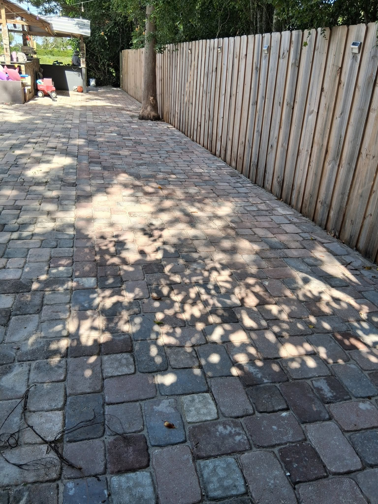

A paver installation is a significant investment — typically $10,000 to $30,000 or more for a full driveway in Palm Beach County. Like any large purchase, the quality of the contractor you hire determines whether you get decades of value or a costly headache within a few years. Here are the seven questions we encourage every homeowner to ask before signing a contract.
1 Are you licensed and insured in Florida?
This is non-negotiable. Florida requires paving contractors to hold a valid contractor's license, and they must carry both general liability insurance and workers' compensation. Ask for their license number and verify it on the Florida DBPR website (myfloridalicense.com). If they can't provide this information immediately, walk away. If something goes wrong on your property with an unlicensed contractor, you bear the liability.
2 How deep will the base be, and what materials will you use?
The base is everything. A properly installed paver driveway in Florida requires a minimum of 4–6 inches of compacted road base rock plus 1 inch of bedding sand. If a contractor says "2 inches" or can't tell you specifically, they're cutting corners that will lead to settling, cracking, and failure within a few years. Get the base specification in writing on the contract.
3 Do you use polymeric sand for the joints?
Polymeric sand is treated with binding polymers that harden when wet, locking joint sand in place and inhibiting weed growth and ant infestation. Regular mason's sand will wash out within a season, requiring constant replacement. Quality contractors use polymeric sand as standard — it's a modest additional cost with significant long-term benefits. If the answer is "we use regular sand," ask why.
4 Can you show me projects you've completed nearby?
Any established contractor should be able to provide references or show you completed work in your area. Better yet, ask if you can drive by an installed project to see the quality of their work in person, a few years after completion. How pavers look at installation day is less telling than how they look two or three years later. Fresh installations always look good — well-installed ones stay looking good.

5 What is your drainage plan?
Every paver surface needs a proper drainage slope — typically 1/8" to 1/4" per foot, directing water away from your house and toward a drain, swale, or street. A contractor who doesn't discuss drainage isn't thinking about your long-term satisfaction. Poor drainage leads to water pooling on the surface, infiltration around your foundation, and accelerated base degradation. Ask specifically: "What direction will water drain, and at what slope?"
6 What does your warranty cover?
A confident contractor stands behind their work. Ask what's covered and for how long — typically quality contractors offer 1-year labor warranties as a minimum, with longer coverage on materials. More important than the length is the specificity: what exactly is and isn't covered? Get the warranty terms in writing as part of your contract. Be skeptical of contractors who offer verbal warranties only — they're difficult to enforce.
7 Will your own employees install the work, or do you subcontract?
This question often catches contractors off guard. Many larger paving companies win contracts and then subcontract the actual installation to whichever crew is available that week — often with less oversight than their sales pitch implied. Smaller, owner-operated companies like Pavers Ordonez typically use consistent crews led by the owner or a long-term supervisor who personally ensures quality. Know who will actually be doing the work on your property.
Red Flags to Watch For
- Requesting full payment upfront before work begins
- No written contract or a vague contract without specifications
- Pressure to decide immediately ("this price is only good today")
- Unable to provide license number or proof of insurance
- Quote significantly lower than all others (they're cutting something)
- No physical business address — only a phone number
About Pavers Ordonez: We're a licensed, insured, and locally owned paving and landscaping company serving Palm Beach County since 2018. We use our own employees, provide written warranties, and are happy to answer any of the above questions — and more. Call (561) 970-1917 for a free, no-pressure estimate.